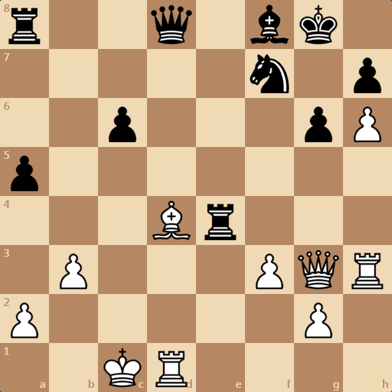
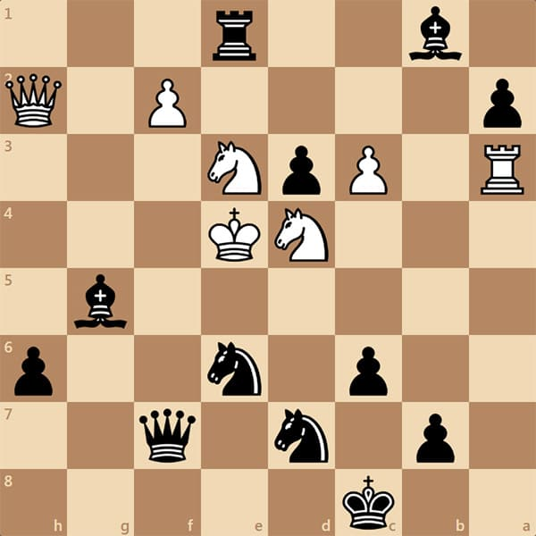
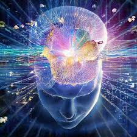

Что такое головоломки и почему они нужны?
Головоломки — это не просто развлечение, а настоящее упражнение для нашего мозга. Как тренировка для тела помогает поддерживать форму, так и решение головоломок помогает держать наш разум в тонусе. Но что именно делает их такими полезными?
- Развивают память и внимание
Когда мы решаем головоломки, мы постоянно работаем с информацией, запоминаем детали и обращаем внимание на мелкие нюансы. Это помогает улучшить память и способность концентрироваться. Например, в кроссвордах мы тренируем не только память, но и скорость восприятия информации, так как нужно помнить слова, их значения и буквы. - Улучшают логическое мышление
Логические головоломки, такие как судоку или шахматные задачи, заставляют нас думать наперед, просчитывать несколько шагов вперед и анализировать возможные варианты. Это развивает умение принимать решения и искать оптимальные решения в реальной жизни. - Снижают стресс
Когда мы решаем головоломки, наш мозг сосредотачивается на задаче и на какое-то время забывает о внешних проблемах. Это помогает уменьшить уровень стресса и напряжения. Это как отдых для разума — небольшой отпуск от повседневных забот. - Укрепляют нейропластичность
Нейропластичность — это способность мозга изменяться и адаптироваться. Исследования показывают, что решение головоломок способствует созданию новых нейронных связей в мозге. Это помогает улучшить когнитивные функции, такие как внимание, восприятие и способность решать задачи. - Увлекательное и полезное времяпрепровождение
Головоломки — это не только полезно, но и увлекательно. Это как маленькие игры для разума, которые можно делать в любое время. Независимо от того, решаете ли вы математические задачи, кроссворды или играете в шахматы, вы всегда можете развивать свои способности и получать удовольствие от процесса.
Таким образом, головоломки — это не только способ развлечься, но и отличная тренировка для мозга. Они помогают поддерживать умственные способности на высоте и развивать важные навыки, которые пригодятся в жизни. Так что не упустите шанс поиграть и потренировать ваш мозг!
Математические головоломки
Математические задачи — это не просто числа и формулы, это увлекательное путешествие в мир логики, структуры и творчества. Решая такие головоломки, мы не только тренируем мозг, но и учимся смотреть на задачи с разных сторон, находить нестандартные подходы и быстро анализировать информацию.
Эти задачи подойдут всем, кто хочет улучшить свои аналитические способности, укрепить математические навыки и просто приятно провести время. Математика — это игра, где правила ясны, но решения иногда удивляют своей красотой и простотой. Готовы проверить себя? Тогда начнём!
Предположим, что вы находитесь в комнате, в которой всего 3 выключателя, каждый из которых контролирует одну из 3 ламп в другой комнате. Вы можете включать и выключать выключатели, но при этом не можете видеть, какие лампы горят. Ваша задача — выяснить, какой выключатель управляет какой лампой За какое наименьшее количество попыток вы сможете это сделать?
У вас есть 3 чаши с яблоками: в первой чаше 10 яблок, во второй — 5 яблок, а в третьей — 1 яблоко. Ваша задача — с помощью весов, которые могут измерять только одно яблоко за раз, найти общую массу всех яблок. Сколько измерений вам нужно сделать, чтобы точно узнать массу всех яблок?
Логические головоломки
Логические головоломки требуют умения анализировать и искать нестандартные решения. В них важно не только внимание, но и способность мыслить стратегически. Каждая задача тренирует вашу логику и креативность, помогая находить ответы, которые не всегда очевидны с первого взгляда. Готовы проверить свои логические способности?
Три человека — А, Б и В — стоят в ряд, но никто из них не видит своего положения. Они знают, что они были распределены следующим образом: двое из них имеют одинаковый цвет шапки, а один человек — другого цвета. Они также знают, что цвета шапок — это только красный и синий. Человек А видит шапки людей Б и В, человек Б видит шапки людей А и В, а человек соответственно В видит шапки людей А и Б. Никто не может сразу определить цвет своей шапки, но после нескольких секунд раздумий, один из них говорит: "Я знаю, какого цвета моя шапка". Какой человек это сказал?
На столе лежат 10 монет. Все монеты одинаковые, но одна из них — подделка и легче остальных. За сколько взвешиваний на весах без гирь можно определить подделку?
Шахматы
Шахматы — это не просто игра, это настоящее поле битвы для ума. На шахматной доске каждый ход требует стратегии, предсказания и способности думать на несколько шагов вперёд. Шахматы развивают логическое мышление, учат принимать решения в условиях ограниченного времени и часто становятся зеркалом личных качеств игрока: терпения, концентрации и умения не сдаваться. В этой секции вы найдёте разнообразные задачи и ситуации, которые помогут вам улучшить свои шахматные навыки и погрузиться в увлекательный мир этой древней игры. Готовы испытать свои силы?
Сколько ходов понадобится белым, чтобы поставить мат?

Сколько ходов понадобится черным, чтобы поставить мат?

Любопытный факт: в шахматах можно поставить мат спустя два хода после начала партии!
Тетрис
Тетрис — это не просто игра, это настоящая классика, которая оставила неизгладимый след в истории видеоигр. С момента своего появления в 1984 году, эта простая, но увлекательная головоломка завоевала сердца миллионов людей по всему миру. В Тетрисе нужно управлять падающими блоками, пытаясь собрать их в полные горизонтальные линии. С каждым уровнем игра становится сложнее, и только самые ловкие смогут преодолеть все препятствия. Эта игра тренирует внимание, реакцию и логическое мышление, превращая каждую минуту в настоящее испытание для вашего разума. Готовы узнать несколько интересных фактов об этой игре?
ФАКТ 1
Тетрис был создан на компьютере с ограниченными ресурсами: Игра была разработана на советском ЭВМ "Электроника 60", который имел всего лишь 64 КБ памяти. Несмотря на такие ограничения, Пажитнов смог создать одну из самых известных и увлекательных игр всех времён.
ФАКТ 2
Тетрис может улучшать когнитивные функции: Исследования показали, что игра в Тетрис может улучшить когнитивные функции, такие как память и внимание. В одном из экспериментов участники, которые играли в Тетрис в течение нескольких недель, показали значительное улучшение в пространственном восприятии и способности запоминать объекты.
Тетрис вдохновил создание "эффекта Тетриса": Этот термин описывает феномен, когда человек продолжает видеть или повторять действия игры даже после того, как он её завершил. Например, человек может закрыть глаза и увидеть падающие тетромино или представить их в повседневной жизни. Это явление связано с тем, что игра тренирует мозг и вызывает визуальные и когнитивные ассоциации.
Битва разума

Прими участие в интеллектуальном соревновании по решению головоломок - "БИТВЕ РАЗУМА!"
Принять участие